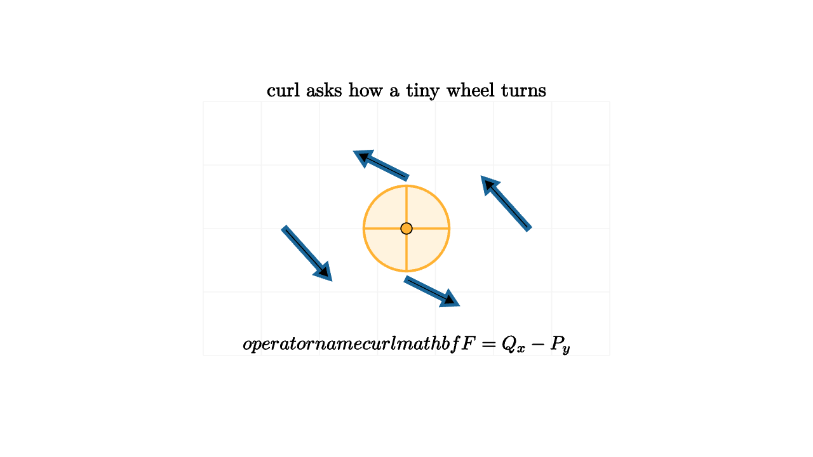

Curl Measures Local Spin
Put a tiny paddle wheel in moving water. If the current pushes harder on one side than the other, the wheel starts to turn. The wheel may drift downstream, and the surrounding water may speed up or slow down, but curl focuses on the turning tendency right at that spot.
For a two-dimensional vector field
the scalar curl is
The sign tells the preferred rotation direction. Positive curl means counterclockwise spin under the usual orientation of the plane. Negative curl means clockwise spin.

source
let soft = |col, amount| lerp(WHITE, col, amount)
mesh wheel = [
fill{soft(ORANGE, 0.16)} stroke{ORANGE, 2.4} Circle(0.42),
stroke{ORANGE, 2} Line(0.42l, 0.42r),
stroke{ORANGE, 2} Line(0.42d, 0.42u),
center{0r} fill{ORANGE} Circle(0.055)
]
mesh diagram = [
stroke{soft(LIGHT_GRAY, 0.15), 1} LineGrid([-2.0, 2.0, 8], [-1.25, 1.25, 5], 1),
stroke{BLUE, 3} Arrow(1.2r, 0.75r + 0.5u),
stroke{BLUE, 3} Arrow(0.5u, 0.5l + 0.75u),
stroke{BLUE, 3} Arrow(1.2l, 0.75l + 0.5d),
stroke{BLUE, 3} Arrow(0.5d, 0.5r + 0.75d),
wheel,
center{1.35u} Text("curl asks how a tiny wheel turns", 0.70),
center{1.15d} Tex("\\operatorname{curl}\\mathbf F=Q_x-P_y", 0.68)
]The formula is less mysterious if you compare the four sides of a tiny square. The top side moves in the $x$ direction, so horizontal force there contributes to circulation. The bottom side also moves horizontally, with the opposite orientation. A change in $P$ as $y$ changes creates a twist. The right and left sides do the same for the vertical component $Q$ as $x$ changes. The subtraction records the orientation of those edge contributions.
The standard spinning field is
Here $P=-y$ and $Q=x$, so
Every tiny wheel turns counterclockwise at the same local rate. The field also has zero divergence, so it rotates without acting as a source or sink.
Now take the radial field
Its curl is
Arrows point outward, yet a tiny wheel does not receive a twisting imbalance. Divergence and curl separate two different instincts of a field: expansion and rotation.
source
let soft = |col, amount| lerp(WHITE, col, amount)
"Wheel"
mesh wheel = [
fill{soft(ORANGE, 0.16)} stroke{ORANGE, 2.4} Circle(0.42),
stroke{ORANGE, 2} Line(0.42l, 0.42r),
stroke{ORANGE, 2} Line(0.42d, 0.42u),
center{0r} fill{ORANGE} Circle(0.055)
]
mesh scene = [
stroke{soft(LIGHT_GRAY, 0.15), 1} LineGrid([-2.0, 2.0, 8], [-1.25, 1.25, 5], 1),
stroke{BLUE, 3} Arrow(1.2r, 0.75r + 0.5u),
stroke{BLUE, 3} Arrow(0.5u, 0.5l + 0.75u),
stroke{BLUE, 3} Arrow(1.2l, 0.75l + 0.5d),
stroke{BLUE, 3} Arrow(0.5d, 0.5r + 0.75d),
wheel,
center{1.35u} Text("positive curl spins counterclockwise", 0.64)
]
play Fade(0.7)
"Turn"
wheel = rotate{1.2} wheel
scene = [
stroke{soft(LIGHT_GRAY, 0.15), 1} LineGrid([-2.0, 2.0, 8], [-1.25, 1.25, 5], 1),
stroke{BLUE, 3} Arrow(1.2r, 0.75r + 0.5u),
stroke{BLUE, 3} Arrow(0.5u, 0.5l + 0.75u),
stroke{BLUE, 3} Arrow(1.2l, 0.75l + 0.5d),
stroke{BLUE, 3} Arrow(0.5d, 0.5r + 0.75d),
wheel,
center{1.35u} Text("the wheel records local circulation", 0.64)
]
play Lerp(1.0)
"Shear"
scene = [
stroke{soft(LIGHT_GRAY, 0.15), 1} LineGrid([-2.0, 2.0, 8], [-1.25, 1.25, 5], 1),
stroke{GREEN, 3} Arrow(1.45l + 0.65d, 0.85l + 0.65d),
stroke{GREEN, 3} Arrow(1.3l + 0.15d, 0.85l + 0.15d),
stroke{GREEN, 3} Arrow(1.05l + 0.35u, 0.85l + 0.35u),
stroke{GREEN, 3} Arrow(0.85r + 0.65d, 1.45r + 0.65d),
stroke{GREEN, 3} Arrow(0.85r + 0.15d, 1.3r + 0.15d),
stroke{GREEN, 3} Arrow(0.85r + 0.35u, 1.05r + 0.35u),
center{1.35u} Text("unequal side pushes create twist", 0.64)
]
play Trans(1.0)Curl is the local density of circulation. If you integrate $\mathbf F\cdot d\mathbf r$ around a tiny closed curve and divide by the area inside, the limit is curl. This statement previews Green's theorem, where circulation around a boundary equals the total curl spread across the region.
In three dimensions, curl becomes a vector:
Its direction is the axis a tiny paddle wheel would choose, following the right-hand rule, and its magnitude is the strength of that local spin. This is why curl appears in fluid mechanics and electromagnetism. Vortices, rotating flow, and magnetic fields all need language for local turning.
Curl from two shears
The expression $Q_x-P_y$ compares two ways a field can twist a small square. If $Q$ increases as $x$ increases, the right side of the square is pushed upward more strongly than the left side. That creates counterclockwise spin. This is the $Q_x$ part.
If $P$ increases as $y$ increases, the top side is pushed right more strongly than the bottom side. That creates clockwise spin under the standard orientation, so it is subtracted. The minus sign is an orientation sign, not a mysterious algebra trick.
This view makes examples easier to invent. The field
has curl $1$. Vertical arrows grow as you move right, so a small wheel feels a stronger upward push on its right side. The field
has curl $-1$. Horizontal arrows grow as you move upward, so the top side is pushed right more strongly, producing clockwise spin.
Circulation without translation
A field can move every nearby point in almost the same direction and still have small curl. Imagine a conveyor belt moving straight to the right. A tiny wheel placed on it drifts, but the two sides of the wheel feel nearly equal pushes. Translation alone does not create local spin.
A field can also spin without much net drift. Near the center of $\langle -y,x\rangle$, opposite sides of the wheel receive tangent pushes in matching directions around the center. The wheel rotates even if the center stays near its starting point.
This distinction matters in physics. In fluid flow, vorticity is curl of velocity, and it describes local rotation of fluid elements. In electromagnetism, Maxwell's equations relate curl of electric and magnetic fields to changing fields and currents. The same small-wheel idea survives inside advanced equations.
The useful teaching image is small and physical. Hold a tiny wheel at a point. Let the surrounding arrows push it. If it turns, curl is present. If it expands away from the point, divergence is present. A vector field can do either, both, or neither, and the partial derivatives tell those stories separately.